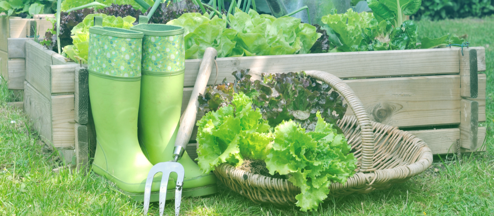

Вот так просыпаешься в одно прекрасное утро, выходишь
на балкон
и застываешь в озарении — здесь должно быть патио! Чтобы с розмарином,
лавандой, базиликом… И лимонад
с собственной мятой в ленивый жаркий вечер. Ничего,
что
последний раз был на даче в десятилетнем возрасте и мечтал, как на нее
упадет метеорит. Уж в этот раз наверняка будет приятнее и
интереснее... Нет, это не старость.
Это суперпопулярный тренд! И
даже, пожалуй, не мода,
а необходимость — результат текущей
стрессовой пятилетки.
Модно-огородно

Не забудьте обзавестись парой модных резиновых сапожек
Евсения МалиноваКризисный психолог
«Всплеск интереса к садоводству — итог возросшей психологической нагрузки, действенный способ «заземления». Занимаясь растениями, люди фокусируются на чем-то материальном, получают ощущение контроля над ситуацией, уходят от рутины.
Кроме того, сажая семечко в землю, мы не знаем, получится что-то или
нет, но именно это предвкушение дает даже более красочные эмоции,
нежели результат. Оно дает надежду. Неудивительно, что люди «нервных»
профессий находят себя
в садоводстве. Если погуглите, то
встретите немало громких имен: актеров, музыкантов, политиков — в
рядах садоводов-любителей. А кое-кто превратил увлечение в доходный
бизнес. Например, вы знали, что новоиспеченный король Карл III вот уже
40 лет лично занимается органическим садоводством в своем поместье
Хайгроув, выпустил об этом книгу и получает более 3 миллионов фунтов.

Еще больше душевных статей у нас в Телеграм-канале
Ваш сад — ваши правила
Не бойтесь и не сомневайтесь. Главный продукт от всей этой возни с
землей, семенами, рассадой вы получите в любом случае – испытаете
положительные эмоции, расслабитесь, проведете время наедине с собой
или в кругу близких по духу, отвлечетесь
от повседневности.
Поэтому здесь нет каких-то критериев успеха: ваш сад/балкон/подоконник
– ваши правила. Можно найти прелесть даже в сорняках. Немного терпения
– кажется, мы все забыли, что такое естественное течение жизни, а
природа пока еще все помнит.

Ваши зеленый друзья будут всегда с вами!
Неважно, каким будет ваш первый сад – гектар в поле, грядка
в
парке, клумба у подъезда или несколько горшков с зеленью на балконе.
Важно, что он помогает отдохнуть душой и восполнить утраченный ресурс.
Расскажите в наших социальных сетях ,
а какие у вас отношения с
«зелеными друзьями»? Что для вас значит дача: трудовая повинность,
место силы или пока новый загадочный мир?